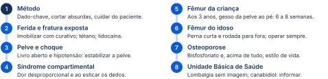
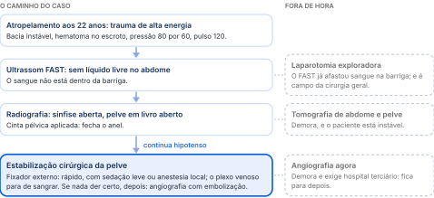
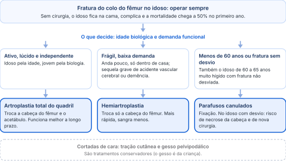

Primeiro momento
Analgésico, anti-inflamatório e fisioterapia analgésica quebram o ciclo e relaxam a musculatura.
Dez questões de prova resolvidas por eliminação e a ortopedia que cada uma cobra, do local do acidente à Unidade Básica de Saúde.
Seminário de questões organizado por assunto: cada capítulo ensina o tema e mostra como a questão se resolve por eliminação. A legenda de cores está na página 2.
“A gente aqui é para tentar ajudar vocês a passarem no futuro, entendendo o que é a Ortopedia, mas também a ideia não é sacanear ninguém aqui; a nossa prova tem que ser um método de avaliar vocês como alunos e passar de semestre.”

As provas nacionais trazem um caso longo e quatro ou cinco saídas. Nem sempre você vai saber a resposta de cara: o que resolve é achar o dado que importa, cortar o que é absurdo e escolher, entre o que sobra, o que cuida primeiro do paciente.
O ENAMED e as provas de residência trazem um enunciado grande, que é uma história clínica. Boa parte dele é contexto (como foi o acidente, quem levou o paciente) e uma ou duas frases carregam a questão: na fratura exposta, “ferimento na região da clavícula com exposição do fragmento”; no choque, “mantendo-se o quadro de hipotensão”.
As questões não saem iguais à aula: são interpretativas. E muitas, mesmo com um termo imperfeito, não serão anuladas. As questões curtas e diretas, do tipo que a turma prefere, servem para treinar, mas a prova nacional não deve ser assim.
“Mas não adianta reclamar: ou tu se adapta à prova e aprende a fazer desse jeito, porque a instituição que tu vai fazer vai exigir isso.”
“Nem sempre tu sabe a resposta, eu também não, mas a gente tem que captar a ideia da prova.”
Com quatro alternativas, cortar duas deixa a escolha entre duas: a chance de acertar passa de uma em quatro para uma em duas, mesmo sem saber tudo.
“Nem sempre” é uma expressão ruim numa alternativa: deixa a frase sem certo nem errado. Uma questão da disciplina já foi anulada por causa dela, e ela está saindo do banco de questões do professor. Na prova de título de Ortopedia da Sociedade Brasileira de Ortopedia e Traumatologia, hoje sempre há uma prova prática de conduta: um caso clínico e a pergunta “o que você faria?”.
Quando o osso quebrado rompe a pele, a fratura é exposta, e o grande risco é a infecção. No local do acidente ninguém alinha nem puxa: cobre-se a ferida com algo limpo e imobiliza-se como está. No hospital, limpa-se a ferida, começa o antibiótico e pensa-se no tétano.
O primeiro princípio é deixar a ferida o mais limpa possível, para que a fratura exposta fique parecida com uma fratura fechada. O segundo é começar o antibiótico logo. O terceiro é pensar na prevenção do tétano: as provas gostam de saber se você lembrou dela.
Em ferimento contaminado, se a última dose tem mais de 5 anos, faz-se reforço; com menos de 5 anos, está em dia.
Na rua, o que importa é melhorar a dor e o conforto do paciente e evitar infecção. Toda alternativa ligada a isso tem mais chance de estar certa.
Imobilizar é tirar o movimento da fratura: a dor diminui, e a terra e a sujeira param de entrar na ferida. Serve até papelão. Na Europa e nos Estados Unidos, paramédicos e até o agricultor que mora na beira da estrada são treinados para isso; o Corpo de Bombeiros usa talas prontas, mas o papelão também funciona. O curativo é uma compressa limpa sobre a ferida, que reduz a chance de infecção.
Alinhar, tracionar, reduzir. Todo mundo quer puxar a perna e pôr a fratura no lugar, porque desalinhada “fica feia”. Na rua, imobiliza-se como está: as três dizem a mesma coisa e caem juntas. Nem antibiótico: no meio da rua, não se fala nele.
Vítima de acidente, atendida no local, com ferimento na região da clavícula e exposição do fragmento ósseo. O resto do enunciado conta como foi o acidente.
Qual a conduta no atendimento pré-hospitalar?
Desbridamento é a limpeza cirúrgica da ferida: tira-se a parte morta, o tecido que não está vivo. Em ferida localizada, pode ser feito com anestesia local. O anestésico em excesso intoxica: o quadro começa com formigamento nos lábios, gosto metálico na boca e zumbido, e pode evoluir para convulsão tônico-clônica durante o procedimento. É a toxicidade sistêmica do anestésico local.
Sem vasoconstritor, até 300 mg no total. A 2%, cada mL tem 20 mg: 20 mL somam 400 mg, acima do teto até para um adulto.
Menino de 12 anos, ferido há 5 dias por um galho de árvore; os pais moram em região de difícil acesso. Ferimento cortocontuso de 12 cm, irregular, na face lateral da perna direita, com contaminação grosseira (terra). Histórico de atopias (alergias); vacinas da infância até os 5 anos. Desbridamento sob anestesia local com 20 mL de lidocaína a 2% sem vasoconstritor. Durante o procedimento: formigamento nos lábios, gosto metálico, zumbido e, em seguida, crise convulsiva tônico-clônica.
Qual o diagnóstico provável?
Um trauma muito forte pode abrir o anel da bacia como um livro. Atrás dele passam veias que sangram muito, e o paciente entra em choque. O que para o sangramento é fechar e segurar a pelve: primeiro com a cinta, depois com um fixador externo.
As fraturas graves têm dois picos de idade. O jovem de 22 anos quebra por trauma de alta energia: o acidente na volta da festa, o atropelamento. O idoso quebra por baixa energia, numa queda da própria altura.
O hematoma no escroto (na mulher, nos grandes lábios) é patognomônico de fratura ou lesão da pelve. Tem nome, sinal de Destot, mas o nome não precisa ser decorado. O ultrassom FAST, um ultrassom rápido feito na sala de emergência para procurar sangue na barriga, veio negativo: não há líquido livre no abdome.
A sínfise púbica está muito aberta, com desnível entre as duas metades: é a lesão em livro aberto. Para abrir assim, um atropelamento de altíssima energia arrebentou todos os ligamentos da frente. E, para abrir na frente, a pelve tem de quebrar ou abrir atrás: neste caso há fratura no sacro (os forames sacrais, redondinhos de um lado, estão bagunçados do outro), ou ao menos lesão do ligamento sacroilíaco.
Atrás fica o plexo venoso pré-sacral, que sangra bastante. Nas fraturas mais graves, que desmontam a parte de trás, pode romper a artéria glútea superior, na chanfradura isquiática: aí o problema é maior.
Homem de 22 anos, atropelado, chega com colar cervical e prancha rígida, com dor no andar inferior do abdome. Consciente e contactante, descorado, pulso 120, respiração 24 por minuto, pressão 80 por 60 mmHg. Abdome plano, doloroso embaixo, descompressão brusca negativa. Bacia instável e hematoma no escroto. FAST sem líquido livre no abdome; radiografia da pelve com lesão em livro aberto; cinta pélvica aplicada, com estabilização mecânica do anel pélvico.
Mantendo-se a hipotensão, qual a próxima conduta?
“Quadril” é a articulação do fêmur com o acetábulo; a fratura é do anel pélvico. Mesmo com o termo errado, a C é a certa, e dificilmente a questão seria anulada.

Com a cinta pélvica aplicada e a hipotensão mantida, a próxima conduta é a estabilização cirúrgica da pelve, em geral com fixador externo. É rápido: feito com sedação leve, se o paciente está bem, e até com anestesia local, no pronto-socorro, se ele está em coma e intubado. Fechar a pelve faz o plexo venoso parar de sangrar.
A angiografia com embolização também trata esse sangramento, mas é para quando nada mais deu certo. Exige um especialista (em geral o cirurgião vascular ou o radiologista intervencionista), um hospital terciário e a sala de hemodinâmica, com arco em C, para fechar a artéria ou a veia que sangra, em geral ramos da artéria ilíaca interna (glútea superior e inferior, pudenda). Isso leva tempo.
Fratura de acetábulo não causa choque. As provas confundem acetábulo com pelve e apresentam a fratura de acetábulo como a causa do choque: não é. O choque clássico é o da fratura do anel pélvico, como o livro aberto; são essas que caem.
Exame demorado no paciente instável. Tomografia, como a angiografia, toma tempo que o paciente hipotenso não tem. Muita gente faz isso: na última prova da disciplina, apareceu muito pedido de ressonância num caso assim.
Esta fratura é instável porque quebrou também atrás (há classificações para isso, como as de Tile e de Young-Burgess). Com o paciente estável, num segundo momento, a tomografia mostra se é preciso fixar atrás, na sacroilíaca, e na frente, com placa na sínfise púbica.
O critério fica entre 2 e 3 cm. Abaixo de 2,5 cm, às vezes não se fixa; acima, a fixação é indicada.
Sem fixar, se o paciente não teve hipotensão (o comum nas fraturas menores), ele fica bem: as sequelas da pelve costumam ser pequenas. Opera-se porque são pacientes politraumatizados: a fixação tira o paciente do leito logo e resolve a dor. Quando há instabilidade horizontal ou vertical, com a pelve solta, a fixação é necessária para a recuperação ser mais rápida.
Uma cirurgia antiga, que já não se faz, retirava a sínfise púbica para alcançar toda a próstata no câncer de próstata, porque ela fica logo atrás. E as pessoas viviam daquele jeito.
Os músculos do antebraço ficam em compartimentos fechados por uma capa que não estica. Se incham demais depois da fratura, a pressão aperta os vasos e o músculo morre. O sinal é dor forte demais para o caso, pior quando se esticam os dedos do paciente.
O compartimento muscular é fechado pela fáscia, que não estica. Depois da fratura, ele incha e fica tenso; a pressão dentro dele sobe até comprometer a circulação dos capilares, e o músculo entra em isquemia e necrose. Os metabólitos da isquemia acumulados ali causam a dor intensa, desproporcional, e a dor ao estiramento passivo dos dedos.
Na fratura do antebraço ou do rádio distal, dor intensa, parestesia e dor ao estender os dedos formam o quadro clássico. A conduta é a fasciotomia descompressiva de urgência.
Depois de um bloqueio de nervo ou de uma raquianestesia, a pessoa não sente dor e não se mexe. O primeiro a voltar é o movimento; a sensibilidade à dor volta sempre por último. Essa ordem ajuda bastante na analgesia depois da cirurgia.
Paciente com dor intensa no antebraço, parestesia e dor à extensão dos dedos após fratura.
Qual o diagnóstico?
Na criança pequena, o fêmur quebrado cola rápido, em cerca de dois meses. Por isso, o tratamento mais comum é um gesso que vai da bacia até o pé, e não cirurgia nem semanas de tração no hospital.
O nome diz tudo: pelvipodálico é o gesso que vai da pelve até o pé. Não é preciso pensar em nada diferente.
Cerca de 2 meses: ninguém fica internado em tração por esse tempo.
No passado, era comum fazer 2 a 3 semanas de tração, cutânea ou esquelética, e depois o gesso. Hoje, na faixa de 6 meses a 5 anos, o gesso pelvipodálico é colocado logo, de forma precoce. Tração esquelética é a que puxa o membro por um pino passado no osso.
“Eu sei o que é porque sou ortopedista, mas vocês têm que pensar: esquelética tem a ver com osso, com puxar o membro.”
“Toda fratura em criança é cirúrgica.” Uma alternativa da prova da disciplina dizia isso, alegando que a cirurgia dá o melhor resultado. Está errada.
Fratura de fêmur em criança de 3 anos.
Qual a conduta mais comum?
O idoso que cai e fica com a perna mais curta e virada para fora quase sempre quebrou a parte de cima do fêmur, o colo. Essa fratura se opera sempre: na cama, o idoso morre das complicações. O tipo de cirurgia depende de quão ativo ele é, não só da idade no documento.
Trauma, dor no quadril, membro inferior encurtado e em rotação externa: é a fratura do fêmur proximal, a fratura típica do idoso, e a resposta clássica é a fratura do colo do fêmur. É a cena do idoso na maca com um pé caído para fora e mais curto. As provas gostam dessa pergunta.
Paciente com trauma e dor no quadril, membro inferior encurtado e rodado externamente.
Qual o diagnóstico provável?
Em 2030, os idosos serão de 15 a 20% da população, aqui e na China. Em Cascavel, com 300 e poucos mil habitantes, 15% são cerca de 45 mil idosos: muita fratura do fêmur proximal, a fratura do paciente osteoporótico.
A família do idoso tem medo de que ele morra na cirurgia. Mas a comparação entre operar e não operar já foi feita: deixar uma pessoa de 85 anos com essa fratura na cama, sem operar, mata mais. Além disso, a fratura do colo, dentro da cápsula, consolida muito mal sem cirurgia e dói muito.
“Isso é uma fratura cirúrgica sempre! O grande objetivo do ortopedista é operar para tirar o idoso da cama o mais rápido possível.”
Idade cronológica é a da certidão de nascimento. Idade biológica é a do corpo. Entre 22 e 25 anos quase nada muda, e até os 40 a biologia é parecida. Aos 60, 70 ou 80 anos, a diferença entre duas pessoas da mesma idade é enorme.
A Sociedade Brasileira de Quadril tem um consenso baseado na condição biológica e funcional. O idoso pela certidão, mas ativo e lúcido, tende a receber a artroplastia total. O muito debilitado, de baixa demanda, que caminha pouco e só dentro de casa, recebe a hemiartroplastia: o objetivo é tirá-lo do leito e aliviar a dor com uma cirurgia mais rápida e com menos sangramento. Os parafusos canulados ficam para o paciente com menos de 60 anos, para a fratura sem desvio (Garden I e II) ou para o idoso de 60 a 65 anos muito hígido, como um corredor, com fratura não desviada.

No idoso com fratura desviada (Garden III e IV), só parafuso é um problema: a fratura rompe a circulação que chega à cabeça do fêmur, e vêm a necrose avascular e a pseudoartrose. Num paciente de 70 anos, isso significa operar de novo para pôr prótese. Por isso, com desvio, a prótese entra de primeira.
Hemiartroplastia no idoso que anda muito. A prótese parcial gasta a cartilagem do acetábulo (erosão acetabular, cotiloidite), vem a dor, e é preciso revisar a cirurgia para uma artroplastia total. Antigamente se trocava toda a prótese; hoje, as hastes modulares, com cabeças intercambiáveis (bipolares), permitem manter a haste do fêmur e fazer só o acetábulo.
Fratura do colo do fêmur em idoso.
Qual a conduta mais adequada?
Depende do perfil do idoso, e caberia recurso: se ele for ativo e independente, a artroplastia total é melhor. Se a prova trouxer as duas próteses, quem decide é a idade biológica.
“Tem nuances, mas dá para matar eliminando as absurdas.”
Osteoporose é osso fraco. Quem quebra o fêmur numa queda da própria altura já tem o diagnóstico. No sistema público, o remédio de primeira linha é o bisfosfonato, mas o que mais muda o risco é o estilo de vida: cálcio, sol, exercício e proteína.
O fêmur é um dos ossos mais resistentes do corpo. Quebrá-lo num trauma de baixa energia, como uma queda da própria altura, é fratura por fragilidade: diagnóstico clínico de osteoporose.
O passo seguinte é separar a primária da secundária. Na secundária há uma causa: quimioterapia ou remédios que tiram massa do osso, como corticoide, anticoagulantes (heparina) e anticonvulsivantes de uso crônico.
Pelo Protocolo Clínico e Diretrizes Terapêuticas nacional da osteoporose, a primeira linha é o bisfosfonato, como o alendronato de sódio: o comprimido de uma vez por semana (70 mg). Há também um de uma vez por mês, o ibandronato. O alendronato está na farmácia básica do Sistema Único de Saúde. Não é melhor nem pior que os outros: é o protocolo.
O bisfosfonato diminui a ação do osteoclasto, inibindo a reabsorção do osso, para que o osteoblasto fabrique osso e o metabolismo ósseo não se desequilibre tanto. O preço é um osso muito rígido, sem a remodelação normal. Daí vêm as complicações: osteonecrose de mandíbula e a fratura atípica do fêmur, que racha sem trauma nenhum.
Depois, pausa, para o osso recuperar a ductilidade: a capacidade de torcer sem quebrar.
“Toma esse, mal não faz.” Era o que se dizia quando o bisfosfonato chegou para a osteoporose. Faz: deixa o osso rígido e quebradiço, com fratura atípica do fêmur e osteonecrose de mandíbula.
Remédio sozinho não muda o risco de queda nem a qualidade do osso. A paciente da questão é saudável; o que mais indicar a ela é mudar o estilo de vida:
“O mais importante, para mim, é mudar o estilo de vida. Se a gente não mudar o estilo de vida, não muda o risco de queda e a qualidade óssea.”
No Brasil, sol não é um problema sério. Na Islândia é: são 3 meses de verão por ano, 6 meses em que o sol não aparece e os outros 3 mais ou menos.
“Eu sempre imagino que o tratamento seja uma coisa que vocês possam pensar depois, quem se dedicar à área. Mas os caras da banca não pensam assim.”
Mulher de 72 anos que, há 2 anos, caiu da própria altura e fraturou o fêmur. Sem quimioterapia e sem remédio que cause osteoporose. Já toma vitamina D e cálcio.
Com base no Protocolo Clínico e Diretrizes Terapêuticas nacional da osteoporose, qual o medicamento de primeira linha?
O remédio é o que menos importa no tratamento, mas é o que a questão pediu.
Na Unidade Básica, duas situações típicas. A dor lombar de quem carrega peso, sem sinal de alarme, melhora com tratamento simples e não pede exame de imagem. E quem pede um remédio sem evidência nem previsão no sistema público precisa ser informado e orientado.
A dor lombar que depende do esforço físico (piora no fim do dia de trabalho, depois de carregar peso), com pouco tempo de evolução, sem sinal de alarme e sem déficit neurológico, é uma lombalgia mecânica comum. Nesse quadro, as diretrizes da atenção primária não pedem exame de imagem: nem radiografia, nem tomografia, nem ressonância. A conduta é tratamento clínico conservador, com orientação postural e mudança de hábitos.
O exame neurológico normal afasta compressão de raiz nervosa ou da medula: força e sensibilidade normais, reflexos patelar (raiz L4) e aquileu (raiz S1) preservados. O sinal de Lasègue é a elevação da perna estendida, que procura irritação do nervo ciático (formado pelas raízes de L4 a S3); negativo, o nervo não está irritado.
Analgésico, anti-inflamatório não esteroidal por pouco tempo, relaxante muscular e fisioterapia com orientação ergonômica. No começo, afasta-se um pouco o paciente do esforço pesado.
A dor causa contratura reflexa da musculatura paravertebral, que causa mais dor: um ciclo vicioso.
Analgésico, anti-inflamatório e fisioterapia analgésica quebram o ciclo e relaxam a musculatura.
Fisioterapia de fortalecimento (cinesioterapia, tronco) prepara a musculatura para o trabalho.
Homem de 45 anos, da construção civil, na Unidade Básica: dor lombar há 1 mês, piorando, irradiada para a face posterior da coxa direita, pior no fim do expediente, depois de carregar peso. Sem trauma, febre ou perda de peso. Dor à palpação paravertebral, flexão preservada; força, sensibilidade e reflexos normais; Lasègue negativo.
Qual a conduta adequada?
É uma prova de conduta: o diagnóstico de fibromialgia não está em discussão. A paciente, sem melhora com vários tratamentos, pede cannabis medicinal. O médico da Unidade Básica precisa saber que não há protocolo nem evidência científica robusta para a dispensação pelo Sistema Único de Saúde na fibromialgia, informar isso e orientar outras medidas, farmacológicas e não farmacológicas. A conversa não é fácil, e o ideal seria a própria instituição assumir essa orientação.
“Isso não é trabalho de médico, né? Trabalho de médico é cuidar do paciente.”
Mulher de 48 anos na Unidade Básica de Saúde, com dor crônica generalizada e persistente. Outro médico deu o diagnóstico de fibromialgia; desde então, vários tratamentos, sem resultado. Ela pede a prescrição de cannabis medicinal.
Qual é o papel do médico da Unidade Básica?
O que está fora da lista de medicamentos do Sistema Único de Saúde é excepcional, fora do rol, e muitas vezes vai para a Justiça; na ortopedia, é a prótese importada, diferente da que o sistema paga. Quem paga somos todos: um dilema de saúde pública, comum na América Latina. Na Europa, onde o Estado paga na maioria dos países, quem quer prótese fora do padrão vai ao privado e paga tudo.
Fratura exposta: limpar para ficar como fechada, antibiótico logo e prevenção do tétano. A vacina dura 10 anos; ferida contaminada com mais de 5 anos da última dose pede reforço.
No local do acidente: imobilizar com curativo (dor, conforto, infecção). Não alinhar, não tracionar, não reduzir.
Pelve em livro aberto com hipotensão, mesmo com cinta pélvica e FAST negativo: estabilização cirúrgica da pelve (fixador externo). Tomografia e angiografia demoram; laparotomia não, com FAST negativo.
Quem sangra é a pelve (plexo venoso pré-sacral); fratura de acetábulo não causa choque.
Síndrome compartimental: dor intensa e desproporcional, parestesia e dor ao esticar os dedos depois da fratura.
Fêmur aos 3 anos: gesso pelvipodálico, da pelve ao pé; consolida em 6 a 8 semanas.
Trauma com membro encurtado e rodado para fora: fratura do colo do fêmur, a fratura típica do idoso.
Colo do fêmur no idoso: cirurgia sempre; sem operar, a mortalidade chega a 50% no primeiro ano.
A idade biológica escolhe: ativo e lúcido, artroplastia total; frágil e de baixa demanda, hemiartroplastia; menos de 60 anos ou sem desvio, parafusos.
Osteoporose: primeira linha do protocolo nacional é o bisfosfonato (alendronato). Osso rígido: osteonecrose de mandíbula e fratura atípica do fêmur; cerca de 5 anos e pausa.
Estilo de vida pesa mais que o remédio: cálcio na comida, sol, atividade física e proteína.
Lombalgia mecânica sem sinal de alarme e sem déficit: nenhum exame de imagem; tratamento conservador e orientação.
Fibromialgia pedindo canabidiol: informar que falta evidência robusta e que não há previsão no Sistema Único; orientar outras medidas.